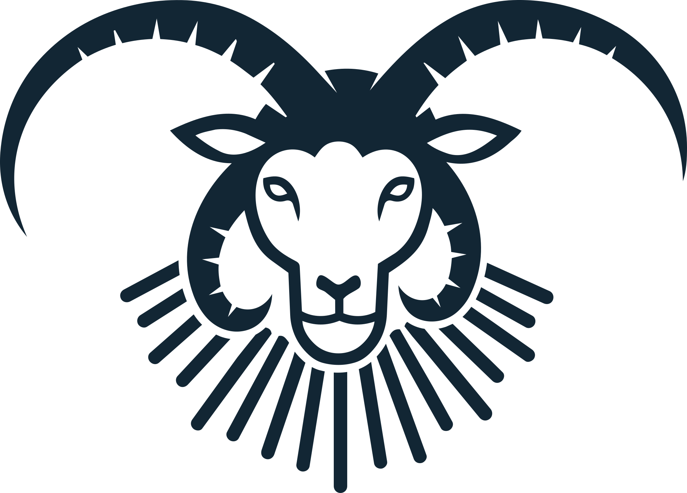
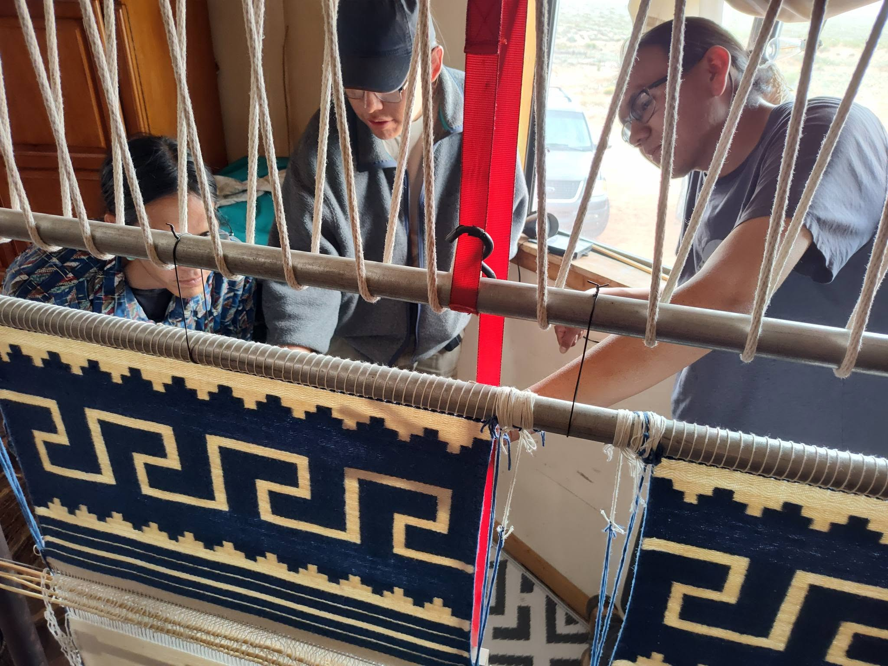

HOME HERO — CHOSEN SET
1a
The Beam — faithful evolution
Coming-soon page grown up: logo held in the light, centered, night sky.
OUR MISSION
The Kady Youth Sheep Camp Apprenticeship carries the heartbeat of our ancestors — a path of returning to the lifeways of sheep, our gentle teachers of patience, balance, and care.
— Roy Kady, Kady Youth Sheep Camp
FROM THE TRAIL · 2022
FRAMING PENDING ROY'S APPROVAL
After 50 years, the sheep walked the mountain trail again.
RECOGNITION
ARIZONA HIGHWAYS · THREE FEATURES 2021–2023 · JAMIE'S AMERICAN ROAD TRIP, 2009 · "JAMIE'S AMERICA" COOKBOOK · NATIVE AMERICAN RIGHTS FUND · SLOW FOOD PRESIDIUM
1b
The Weaving — loom-forward split
Warp-strung hero; the sheep-to-loom chain runs as a field-log strip; wool band beneath.

KADY YOUTH SHEEP CAMP
APPRENTICESHIP
Our StoryGalleryEventsPartnersMerchContact
Support

FIG. 01 — THE UPRIGHT LOOM, TEEC NOS POS
WARP: HANDSPUN CHURRO
OUR MISSION
The Kady Youth Sheep Camp Apprenticeship carries the heartbeat of our ancestors — a path of returning to the lifeways of sheep, our gentle teachers of patience, balance, and care.
— Roy Kady, Kady Youth Sheep Camp
FROM THE TRAIL · 2022
FRAMING PENDING ROY'S APPROVAL
After 50 years, the sheep walked the mountain trail again.
RECOGNITION
ARIZONA HIGHWAYS · THREE FEATURES 2021–2023 · JAMIE'S AMERICAN ROAD TRIP, 2009 · "JAMIE'S AMERICA" COOKBOOK · NATIVE AMERICAN RIGHTS FUND · SLOW FOOD PRESIDIUM
NAVAJO-CHURRO · N. AMERICA'S EARLIEST DOMESTIC BREED
APPRENTICESHIP IN SESSION — SUMMER 2026
NEXT GATHERING — FOLLOW ON FACEBOOK
OUR MISSION
The Kady Youth Sheep Camp Apprenticeship carries the heartbeat of our ancestors — a path of returning to the lifeways of sheep, our gentle teachers of patience, balance, and care.
— Roy Kady, Kady Youth Sheep Camp
FROM THE TRAIL · 2022
FRAMING PENDING ROY'S APPROVAL
After 50 years, the sheep walked the mountain trail again.
RECOGNITION
ARIZONA HIGHWAYS · THREE FEATURES 2021–2023 · JAMIE'S AMERICAN ROAD TRIP, 2009 · "JAMIE'S AMERICA" COOKBOOK · NATIVE AMERICAN RIGHTS FUND · SLOW FOOD PRESIDIUM
1d
The Creation — cloud, willow, rainbow, dawn
The heavens open — the stepped cloud descends full-width over the camp; the flock lives beneath it.

BODY · CLOUD→
BONE · WILLOW→
HORNS · RAINBOW→
FACE · DAWN→
EYES · CRYSTAL→
BREATH · LIFE
OUR MISSION
The Kady Youth Sheep Camp Apprenticeship carries the heartbeat of our ancestors — a path of returning to the lifeways of sheep, our gentle teachers of patience, balance, and care.
— Roy Kady, Kady Youth Sheep Camp
FROM THE TRAIL · 2022
FRAMING PENDING ROY'S APPROVAL
After 50 years, the sheep walked the mountain trail again.
RECOGNITION
ARIZONA HIGHWAYS · THREE FEATURES 2021–2023 · JAMIE'S AMERICAN ROAD TRIP, 2009 · "JAMIE'S AMERICA" COOKBOOK · NATIVE AMERICAN RIGHTS FUND · SLOW FOOD PRESIDIUM